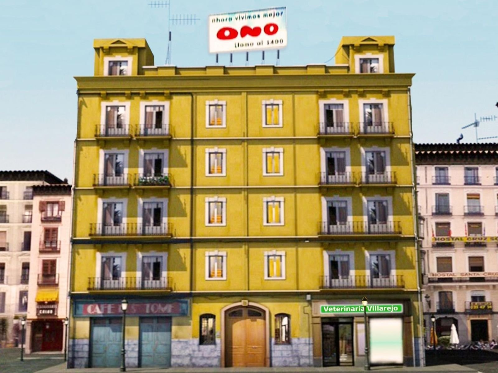

Desengaño 21
Haz clic en cualquier piso para ver quién vivió allí

Los pisos del edificio
El punto más alto del edificio fue también el más cambiante. En él vivieron los hermanos Guerra —Pablo y Álex—, Andrés Guerra durante sus temporadas en el inmueble, y Paco, el fiel empleado del videoclub. El ático albergó también la consulta veterinaria de Bea Villarejo durante una temporada, aprovechando el espacio más amplio y luminoso de la finca. A lo largo de la serie, el ático funcionó como refugio para los personajes más jóvenes e inconformistas del edificio, alejados de las disputas de las plantas inferiores.
El piso del arquitecto y las disputas sentimentales. Roberto Alonso ocupó este piso junto a Lucía Álvarez y su padre Rafael, formando uno de los triángulos relacionales más complicados del edificio. La llegada de Carlos de Haro, empresario adinerado y propietario del videoclub, aportó una dimensión económica y de clase al 3º A que lo distinguía del resto de los pisos. Sus enfrentamientos con los vecinos más modestos reflejaban las tensiones de clase que la serie abordaba con humor.
El piso de las inquilinas variopintas, cuyo rasgo común era la precariedad laboral y el deseo de salir adelante. Belén López fue la inquilina más longeva y el personaje más icónico del 3º B: camarera, modelo, empleada de moda y actriz de anuncios, su vida en ese piso fue un reflejo de la inestabilidad laboral de toda una generación. La compartió con Alicia Sanz durante las primeras temporadas y posteriormente con Ana y María Jesús. Concha de la Fuente también vivió en el 3º B en algún momento. El piso del 3º B fue siempre el más colorido y contradictorio del edificio.
El corazón del caos organizado: el hogar de los Cuesta. Juan Cuesta presidió este piso con la misma eficacia con la que presidía la comunidad de vecinos, es decir, con ninguna. Su esposa Paloma soñaba con un chalé mientras organizaba la vida del piso con mano de hierro; sus hijos Natalia y José Miguel aportaban enredos generacionales constantes. Tras la marcha de Paloma, Isabel Ruiz «La Hierbas» ocupó su lugar, transformando la dinámica familiar del 2º A con sus terapias alternativas y sus crisis de hiperventilación.
El piso con más rotación de inquilinos de todo el edificio, reflejo directo de la movilidad social y laboral de la España de principios del siglo XXI. Armando Cortés y su familia fueron los primeros en habitarlo. Tras su marcha, la familia Guerra —Andrés, Isabel, Pablo y Álex— ocupó el piso durante las temporadas dos, tres y cuatro, aportando el mayor caos de la historia del inmueble. En la quinta temporada, los Heredia tomaron el relevo: Higinio, Mamen, Moncho, Candela y Raquel representaron la irrupción de la clase obrera enriquecida en el edificio.
El cuartel general de «Radio Patio» y el reino de las hermanas Benito. Vicenta y Marisa Benito convirtieron su piso del 1º A en el nodo central de la red de información del edificio. Desde allí monitorizaban cualquier movimiento en el portal, el patio y los pisos superiores. Concha de la Fuente también habitó el 1º A en algún momento. Su presencia en el piso fue tan natural como la de las propias Benito, dado que su relación de amistad y rivalidad con ellas era uno de los motores cómicos más productivos de la serie.
El piso de Mauri y Fernando, escenario de la primera pareja homosexual protagonista en una serie española de máxima audiencia. El 1º B fue testigo de una de las historias de amor más sólidas y emocionalmente complejas de la televisión española de la época. A su historia se sumó Bea Villarejo, que llegó al piso en la segunda temporada, y Ezequiel Hidalgo, el niño adoptado por la pareja en las últimas temporadas. La Hermana Esperanza también tuvo presencia en este piso, en uno de los arcos argumentales más insólitos de la serie.
El cuartel general de los Delgado y el eje de todo lo que ocurría en el edificio. Emilio controlaba desde la portería cada entrada, cada paquete, cada conversación y cada secreto del inmueble, con la excusa permanente de ser «un profesional de la información». Su padre Mariano completaba el dúo de la portería con su filosofía del mínimo esfuerzo y sus reflexiones pseudo-intelectuales. La portería fue también el escenario del inicio del romance entre Emilio y Belén López, que culminaría en la boda final de la serie.
El local comercial de la planta baja, regentado por Paco y propiedad de Carlos de Haro. El videoclub funcionó como punto de encuentro informal de los vecinos del edificio, especialmente de los más jóvenes. Paco, su empleado más fiel, era el único habitante del edificio capaz de mantener buenas relaciones con absolutamente todo el mundo. El negocio reflejaba también la transición tecnológica de la época: los videoclubs vivían sus últimos años de esplendor mientras el DVD comenzaba a sustituir al VHS.